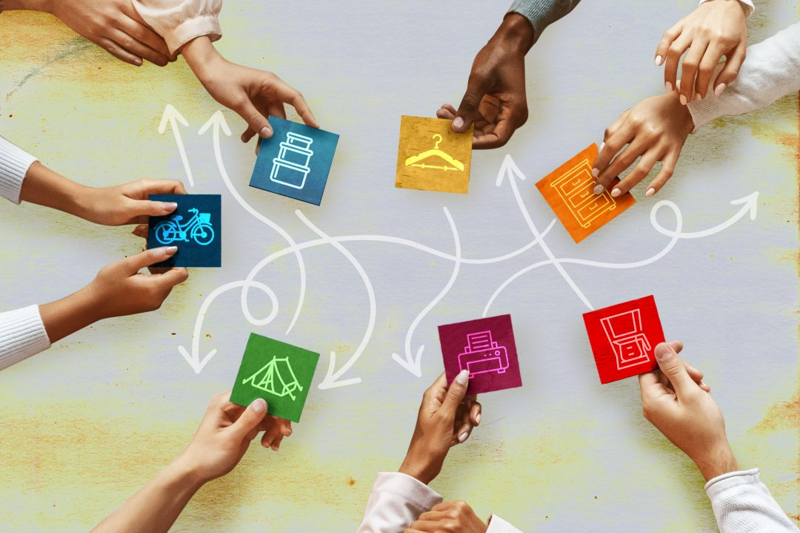
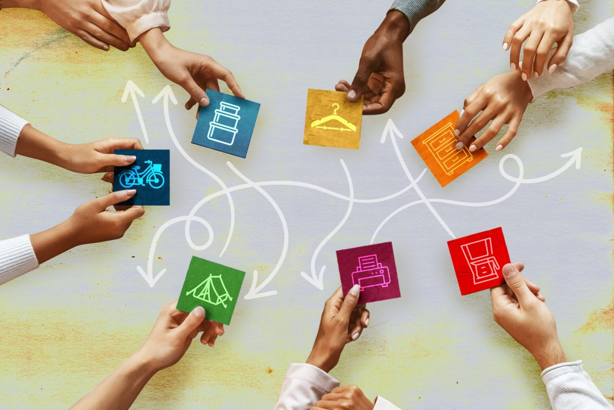

Designed by: webgroup

I de siste årene har digitale kommunikasjonsmetoder endret seg mye.
I tillegg har globalisering blitt i veldig høy grad i hele verden.
Det her hjelper vår organisasjon til å skape nærhet blant annet mennesker
slik det blir en fordel til både de som gir og de som får.
Under er det noen hovedmål til vår organisasjon:
*Hjelpe folk og få dem til å få et bedre liv.
*Skape en unik digital kommunikasjonsmetode blant annet godkjente organisasjoner og brukere.
*Gjøre det enklere å samarbeide mellom mennesker.
*Løse samfunnsproblemer.
*Hindre sortering av masse brukelige ting som noen kaster.
*Kjempe mot fattigdom og løse fattigproblemer.
Designed by: webgroup
